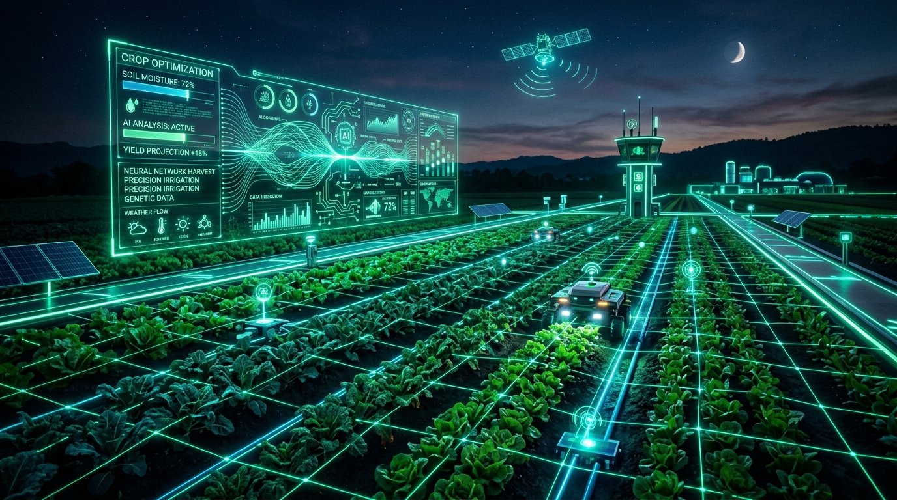

SILENT CODERS
AgriOne – Intelligent Digital Agriculture Platform
AI-powered ecosystem providing real-time intelligence, automated rule validation, and actionable decision support for modern agriculture.
Iyaan Nagari
Team Lead • System Architecture & Project Direction
Bhuvan Kadakabhavi
Silent Coders Team
Jafar Momin
Silent Coders Team
Aiman Nadaf
Silent Coders Team
AgriOne
Intelligent Digital Agriculture Platform
AgriOne is an intelligent digital agriculture platform that connects farmers with AI, real-time agricultural intelligence, crop health analysis, weather patterns, soil dynamics, market information, and farm management tools through one unified ecosystem.

Problems Faced by Modern Farmers
Modern agriculture suffers from fragmented information, climatic uncertainty, and opaque market structures.
Unpredictable Weather
Sudden climate shifts and flash rains damage unharvested crops without local micro-warnings.
Disease Diagnosis
Delayed pest identification leads to rampant crop loss and inappropriate pesticide application.
Improper Irrigation
Over- or under-watering wastes scarce borewell water and leads to severe root rot.
Soil Health Uncertainty
Lack of accessible testing leaves farmers unaware of critical N-P-K nutrient deficiencies.
Fragmented Data
Vital information is scattered across TV bulletins, isolated apps, and hearsay.
Mandi Price Opacity
Middlemen exploit the lack of real-time market transparency, suppressing farmers' profits.
Supply Chain Bottlenecks
Inadequate transit and storage cause perishable produce to spoil before reaching buyers.
Limited Expert Access
Agricultural extension officers are overburdened and miles away from remote rural farms.
Language Barriers
Complex English software excludes millions of regional-language farming households.
Manual Farm Records
Paper tracking causes forgotten spray schedules, lost expenses, and zero audit trails.
What is AgriOne?
AgriOne brings multiple agricultural services into one intelligent, unified platform.
AI Interprets
- Natural language understanding of farmer voice & text queries
- Computer vision detection of crop disease lesions from photos
- Context extraction (crop variety, location, soil context)
- Understands local colloquialisms and intent
Rule Engine Validates
- Mathematical agronomy equations & moisture models
- Validation against government chemical toxicity limits
- Exact N-P-K fertilizer calculation per acre
- Guarantees 100% scientific safety and precision
Actionable Decisions
- Clear operational tasks delivered directly to farmer
- Precision irrigation timers (e.g. 45 min at 06:00 AM)
- Targeted pesticide dosage per 15L backpack pump
- Optimal Mandi market selling timing
Complete AgriOne Ecosystem
A central intelligence platform connected to 18 specialized agricultural modules.
Personalized Farm Command Center
Real-time telemetry and operation overview configured specifically for the farmer's land.
Location-Aware Agriculture
Every recommendation is geo-referenced to the specific micro-climate of the farmer's plot.
1. Farmer Selects Location
Village/city search, GPS auto-detect, and interactive satellite boundary polygon drawing.
2. Micro-Zone Telemetry
Retrieves agro-climatic zone parameters, elevation, historical monsoons, and local soil series.
3. Tailored Recommendations
Eliminates generic advice; all pest, irrigation, and crop advice applies strictly to that coordinate.
Your AI Agricultural Assistant
Answers the actual questions asked by the farmer, not generic demo text.
Talk to AgriOne
Designed for farmers in the field who need instant advice while working with mud on their hands.
Voice Input
Farmer speaks questions naturally in regional dialects. Noise-reduction filters out tractor and wind sounds.
AI Understanding
Speech-to-text with agricultural domain vocabulary matches technical terms and phonetic translations.
Voice Response
Synthesizes human-like regional audio advice. Speaks back clearly so farmers never have to read small text.
Agriculture Without Language Barriers
Synchronized UI
Navigation tabs, dashboard charts, buttons, and alert notices switch dynamically to selected regional tongue.
Native Language AI
AI Assistant reads and answers in the selected dialect, using colloquial farming terms farmers understand.
Regional Voice Engine
Voice-in and Voice-out support ensures that low-literacy farmers enjoy 100% equal access to AI intelligence.
AI Crop Health Scanner
Farmer uploads an actual camera photo for laboratory-grade visual diagnosis.
Upload Crop Image
Farmer snaps actual leaf photo
AI Image Analysis
Deep neural vision model
Disease Identification
Fungal/bacterial pathogen isolated
Health Assessment
Infection severity percentage
Possible Cause
Excess humidity or soil spores
Recommended Action
Organic cure + exact chemical dose
Intelligent Water Management
Eliminating groundwater waste while maximizing crop hydration and root health.
Calculated Water Economics
Cross-calculates crop stage evapotranspiration, soil moisture index, and incoming rainfall radar. Prevents unnecessary pumping and saves electricity.
From Weather Data to Farming Decisions
Raw numbers translated into immediate farmer directives.
33°C Heat Alert
Advises light evening sprinkler misting to protect delicate blossom drop.
85% Rain in 18h
Instructs farmer to postpone all nitrogen fertilizer application immediately.
92% High Dewpoint
Triggers preventative bio-fungicide warning for downy mildew outbreak.
24 km/h Gusts
Cancels pesticide spray operations to prevent hazardous chemical drift.
Understand Your Soil
Protecting long-term soil microbiome while optimizing immediate seasonal nutrition.
Soil Physical Profile
Evaluates soil texture (Black cotton, Sandy loam, Red clay), water holding capacity, and percolation rates.
Chemical & Nutrient Index
Tracks pH balance, Electrical Conductivity, and Primary (NPK) plus Micronutrients (Zinc, Boron, Sulfur).
Actionable Soil Plan
Generates tailored organic compost and fertilizer dosages per acre to restore degraded plots.
What Should I Grow?
Scientific matching of agro-climatic conditions with economic profitability.
Chickpea (Bengal Gram / Chana)
Know the Market Before You Sell
Real-time APMC price benchmarks empowering farmers against middleman price suppression.
Live Mandi Comparison
Compares prices across 5 nearby APMC wholesale markets with distance-adjusted transport costs.
Price Trend Velocity
Analyzes 30-day historical trajectories to identify upward surges or imminent arrival gluts.
Optimal Selling Window
AI suggests whether to sell immediately or utilize warehouse storage for maximum return.
Digital Farm Management
Transforming messy paper logs into a structured digital agricultural management system.
Farm & Crop Profiles
Maintains boundaries, crop varieties, sowing dates, and expected harvest targets across all plots.
Lifecycle Tracking
Tracks physiological growth stages from seed emergence to flowering, pod development, and maturity.
Automated Reminders
Sends advance notices for scheduled fertigation, weeding cycles, and harvesting preparation.
Daily Field Activity Checklist
An interactive checklist that keeps farm labor and operations on schedule.
Equipment & Machinery Management
Preventing expensive mid-season mechanical breakdowns during critical harvest periods.
Machinery Registry
Digital registry for tractors, boom sprayers, rotavators, water pumps, and micro-drip filtration units.
Usage & Telematics
Logs operational engine hours, diesel consumption rates, and attachment service life.
Proactive Maintenance
Predictive service alerts for oil changes, filter cleans, and hydraulic checks before peak field seasons.
Connecting Farmers to Markets
Eliminating intermediaries to ensure maximum profits return to the farmer.
Production Harvest
Digitizes harvest yield estimates, batch numbers, and field origin records.
Quality Standardization
Assesses moisture percentage and grading for fair price realization.
Direct Buyer Matching
Connects agricultural cooperatives with food processors and retail networks.
Connected Logistics
Coordinated cold transport with live delivery tracking and digital escrow pay.
Digital Agricultural Marketplace
A trusted dual-sided digital commerce hub for farm produce and agricultural inputs.
Sell Side: Farm Produce
- Direct listings of harvested grains, pulses, fruits & vegetables
- Fair price discovery without predatory commission agents
- Access to bulk institutional food buyers and export aggregators
- Secure escrow payments released upon quality acceptance
Buy Side: Inputs & Services
- Certified authentic seeds, bio-fertilizers & organic pesticides
- Machinery rental: Pay-per-hour tractor & drone spraying
- Professional soil testing lab booking with doorstep sampling
- Transparent community reviews and ratings of suppliers
Beyond Crop Farming: Livestock & Dairy
Supporting mixed farming households with dedicated animal health and dairy records.
Cattle Profiles & Tagging
Individual records for dairy cows, buffaloes, and goats: breed, age, tag number, and lactation history.
Feed & Nutrition Plans
Balanced green fodder, silage, and mineral mixture rationing to sustain high milk yields.
Health & Productivity
Deworming and vaccination schedule alerts, artificial insemination cycles, and daily milk recording.
Farm Intelligence From Above
Combining high-altitude satellite orbits with ultra-resolution drone flights.
Satellite Vegetation Indices
NDVI (Normalized Difference Vegetation Index) maps reveal hidden canopy stress across wide acreage.
High-Resolution Drone Scouting
Sub-centimeter photography pinpoints weed patches, clogged drip emitters, and crop lodging.
Targeted Ground Action
Farmer inspects only problem coordinates instead of walking miles across fields under hot sun.
Smarter Farming. Sustainable Future.
Protecting vital soil carbon, groundwater tables, and ecological biodiversity.
Precision Water Conservation
Stops continuous flooding; preserves declining aquifers through micro-irrigation schedules.
Chemical Reduction
Spot-treatment protocols prevent unnecessary pesticide spraying, eliminating toxic runoff into rivers.
Soil Carbon Restoration
Crop rotation and green manure advice revitalizes depleted organic matter for future generations.
Agricultural Financial Intelligence
De-risking family farms through institutional credit eligibility and insurance readiness.
Digital Farm Credit Readiness
Verified digital farm records serve as proof of farm productivity for low-interest bank crop loans.
Crop Insurance Support
Simplifies claims by providing geo-tagged weather records and satellite crop damage evidence.
Profitability & Margin Planner
Calculates exact input expenditure vs expected yield revenues to safeguard family finances.
Data Into Decisions
Converting farm operations and environmental telemetry into visual performance metrics.
+18% Projected Output
Compared to previous season via precision fertigation adherence.
32% Water Saved
Calculated through evapotranspiration-based drip timing.
-24% Fertilizer Costs
Eliminated unnecessary chemical over-dosage through soil testing.
Grade-A Produce
Attracted premium prices at local wholesale agricultural mandi.
Proactive Agricultural Alerts
Timely warnings that save crops before disasters strike.
1. Detect
Continuous sensor, satellite, weather radar, and mandi price stream monitoring.
2. Analyze
Evaluates specific threats against farmer's crop variety, growth stage, and soil.
3. Alert
Dispatches high-priority push notifications, audio calls, and regional SMS alerts.
4. Act
Gives clear, non-technical instructions with exact steps and equipment needed.
How AgriOne Works – Complete User Workflow
An unbroken, seamless journey connecting the farmer to practical results.
AgriOne Technology Stack
A scalable, modular, multi-tiered enterprise-grade architecture.
Why AgriOne Is More Than a Chatbot
The essential difference between open-ended conversational models and verified agricultural science.
AI Layer: Understanding & Vision
- Understands conversational queries across diverse regional dialects
- Scans crop leaf disease images and extracts pattern traits
- Recognizes intent, farm parameters, and emotional urgency
- Risk if used alone: LLMs may hallucinate chemical dosages or ignore local pesticide laws.
Rule Engine: Rigorous Agronomy
- Enforces strict mathematical calculations for fertilizer N-P-K
- Cross-validates toxic chemical dosage limits with regulatory guidelines
- Checks irrigation thresholds against moisture balance equations
- Result: 100% scientifically sound, verified, and safe advice for real farmers.
Why AgriOne?
Unified Ecosystem
Replaces 10 fragmented apps with 1 integrated command hub covering the entire lifecycle.
Dual AI + Rule Validation
Natural conversation grounded by strict mathematical agronomy equations for 100% safety.
Voice-First & Multilingual
Eliminates digital literacy barriers so every farmer can speak and listen in their mother tongue.
Live Image Diagnostics
Real-time leaf scanner diagnoses fungal, bacterial, and pest attacks in seconds from photos.
Action-Driven Weather
Converts raw millimetres and wind speed into specific spray/irrigation go/no-go directives.
Hyper-Local Precision
Personalized to the exact GPS coordinates and soil series of the farmer's specific field.
Impact of AgriOne
Delivering measurable value across individual livelihoods and national agriculture.
For Farmers
- Better Decisions: Data-backed crop selection and timely fertilization
- Reduced Uncertainty: Eliminates guesswork about weather and disease risks
- Cost Reductions: Halts fertilizer wastage and avoids unnecessary water pumping
- Higher Realization: Direct market intelligence eliminates middleman cuts
- Universal Access: Regional voice engine bridges rural digital divides
For Agriculture & Ecosystem
- Resource Conservation: Conserves 30-40% of agricultural groundwater
- Soil Health Protection: Halts chemical overuse and preserves soil microbiota
- Data-Driven Agronomy: Enhances national agricultural digitization
- Food Security: Mitigates post-harvest waste and protects staple harvests
- Climate Resilience: Equips farming communities to adapt to weather extremes
Traditional Farming vs AgriOne
A fundamental shift from reactive intuition to predictive, data-driven precision.
Traditional Farming (The Past)
- ❌ Fragmented Information: Scattered across television, rumors, and guesswork
- ❌ Manual Record Keeping: Lost paper notes, missed spray cycles, no audit logs
- ❌ Delayed Decisions: Pests identified only after irreversible leaf damage occurs
- ❌ Opaque Market Prices: Forced to sell at lowest rates offered by local agents
- ❌ Language Barriers: Scientific agriculture trapped in English journals
- ❌ Reactive Mindset: Farmers always scrambling to recover from disasters
AgriOne Platform (The Future)
- ✅ Unified Intelligence: Weather, soil, crops, and market data in one dashboard
- ✅ Digital Farm Ledger: Automated tasks, equipment tracking, and activity checklists
- ✅ Instant AI Diagnostics: Smartphone photo identifies pathogens within seconds
- ✅ Live Mandi Comparisons: Real-time APMC price benchmarks for highest returns
- ✅ Multilingual & Voice: Speaks to farmers naturally in their native mother tongue
- ✅ Proactive Mindset: Early warning systems prevent crop damage before it occurs
Future of AgriOne
IoT & Field Sensors
Real-time soil probes measuring NPK, moisture & pH transmitted via LoRaWAN & NB-IoT networks.
Autonomous Drone Sprays
Automated drone fleets performing spot-spraying based directly on AI leaf disease coordinate maps.
Predictive Yield ML
Multi-spectral satellite models predicting exact quintal harvest yield per hectare weeks in advance.
Government Scheme APIs
Direct linking with Kisan Credit Card subsidies, soil health card databases, and PMFBY insurance.
AgriOne
One Platform. Multiple Agricultural Intelligence Systems. One Smarter Farming Ecosystem.
THANK YOU
AgriOne
“AI-Powered Intelligence for Smarter Farming.”